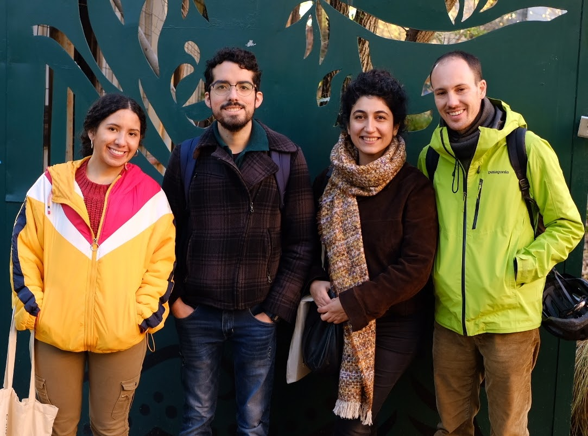

We are a group of students of Geoinformatics Enginnering at Politecnico di Milano.
Angelly Pugliese is a double degree student of Systems Engineering and Computing from Universidad del Norte (Colombia). She decided to study Geoinformatics Engineering to apply her knowledge in Computer Science into Geospatial data.
Rodrigo Cedeño is a Mechatronics Engineer with educational background in Data Science. Previous to beginning his Master’s studies at Politecnico di Milano, he worked for 7 years at FCA Engineering department for the Vehicle Dynamics and Vehicle Crash Test teams. Alongside his work in FCA he developed several projects involving Data Science and Data Automation. He is very interested in Big Data for Geographical purposes alongside with AI intelligence tools for geospatial analysis.
Ruken Dilara Zaf has her Bachelor and Master’s degrees in Environmental Engineering Department from Middle East Technical University(Turkey). She had been working as a teaching assistant in this department between the years 2015 and 2019. After, she decided to improve her career by the knowledge of informatics which she can use also in environmental engineering area. Now, she is a master’s student in Geoinformatics Engineering Department at Politecnico Di Milano(Italy).
Alessandro Zacchera has a bachelor’s degree in Physics Engineering from Politecnico di Milano. He has worked for 5 years as business analyst and financial controller for a mid-cap agropharmaceutical company and, later, as an IoT proposition manager for Vodafone, one of the world’s largest mobile network operators. Prior to that, from 2005 to 2010, he studied finance and economics at Università Bocconi. Now, he is a master’s student in Geoinformatics Engineering at Politecnico di Milano and vice-president of PoliMappers.